This is a short chapter on safety practices and devices associated with electricity. It is important that learners understand the dangers associated with electricity and how accidents and faults can be avoided.
Learners are introduced to various safety devices which are commonly used in appliances and circuitry in order to reduce the risk of electric shocks. Many of these safety devices will be unfamiliar to the learners as they are inside electrical appliances and not seen. It is very important that all learners are able to safely connect a three-pin plug because short circuits can be caused by faulty wiring of plugs.
CAPS dedicates half a week (1.5 hours) to this chapter. However, there are several activities which are worth doing, and also suggested in CAPS. A recommendation is to spend slightly more time than is allocated in CAPS on this chapter, and slightly less time on Chapter 7 on the 'Cost of electrical power' as this chapter does not actually need 2 weeks to teach.
A suggestion is to invite in a certified electrician to share case studies of dangers of faulty electricity and discuss briefly the legislation regarding certifying a house before selling it.
5.1 Safety practices (1 hour)
Tasks
Skills
Recommendation
Activity: Making your own fuse
Demonstration, following instructions, observing, describing, drawing, explaining,
Suggested
Activity: Drawing circuit diagrams with fuses
Accessing and recalling information, communicating (graphically)
CAPS suggested
Activity: Wiring a 3-pin plug
Following instructions, observing, recording, describing
CAPS suggested
Activity: Wiring a house
Accessing and recalling information, communicating (graphically)
CAPS suggested
5.2 Illegal connections (0.5 hours)
Tasks
Skills
Recommendation
Activity: Case study on illegal electricity connections
Accessing and recalling information, interpreting, explaining
Suggested
How safe is my electricity connection?
What is a short circuit?
Why do plugs have three wires?
Safety practices
armature
reset
excess
fuse
circuit breaker
earthing
earth leakage
short circuit
Imagine you are at home, it is dark and you have switched on one of the overhead lights. You then switch on a second light. Does the first light become dimmer? No, it does not. This is because the electrical circuits in houses are parallel circuits.
Why do we use parallel circuits in a house? Do you remember the activities you did in the previous chapter? You saw that a series circuit stops working if one part of it breaks, but a parallel circuit does not. If one of the branches of the parallel circuit stops working, there are still complete pathways for the current and so the rest of the circuit can still function. This also enables you to switch on different lights and plugs in a house at different times.
We also saw that adding resistors to a series circuit increases the total resistance of the circuit, causing the current to decrease. In a parallel circuit, adding resistors does not increase the overall resistance and so the current does not decrease.
Safety Dog provides some useful safety tips in this short video.bit.ly/1cO4vmZ
Despite the advantages of using parallel circuits in the electrical wiring in buildings, there is a disadvantage. Parallel circuits can become overloaded with too many branches and become a safety hazard. The overloading can cause too much heat which could lead to a fire starting. The fire would spread throughout the house and cause a lot of damage.
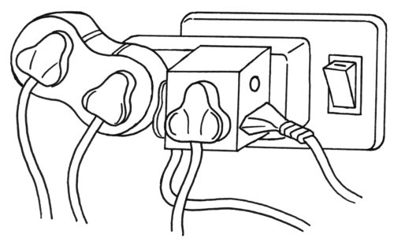This plug is overloaded and is a safety hazard.
Let's now look at some of the safety practices which are followed and employed.
Earthing
What does it mean to earth an electrical appliance? Let's consider the example of a washing machine.
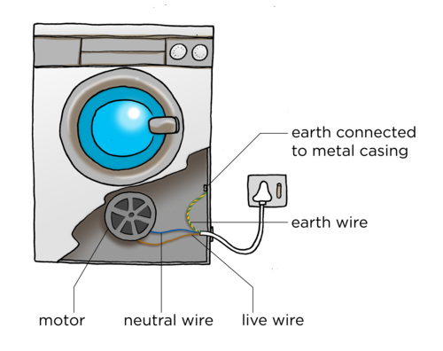
The electric circuit inside the washing machine has three different wires:
a brown live wire
a blue neutral wire
a green and yellow striped earth wire
The colours for the different wires are used universally, so no matter where you are in the world, you will be able to identify the different wires by their colours.
The earth wire is sometime just green or just yellow instead of striped.
The live and neutral wires provide the potential difference needed for the motor inside the washing machine to turn. The earth wire is connected to the metal case of the washing machine. The three wires are encased in a plastic insulation to form one cord which is plugged into the mains electricity supply at the wall. The earth wires from all the electric sockets end up in one thick earth wire which is connected to a big metal spike driven into the ground.
The earth wire usually does nothing. The only time it is used is when something goes wrong inside the machine. If the live wire is exposed and touches the metal casing of the washing machine, you could get an electric shock if you then touch the metal casing. However, the earth wire is connected to the metal casing so that the current goes through the earth wire and into the ground instead of shocking you. The earth wire has a very low resistance and so a strong current will easily go through it.
How to deal with an electrical shock from an appliance.bit.ly/1c9pGDg
The earth wire completes the circuit and connects the live wire to the ground. This is a short circuit. The washing machine will stop working because none of the electricity will flow through the motor.
If there was no earth wire then the metal casing of the washing machine would become part of the electrical circuit and anyone who touched it would get an electrical shock. That is why an earth wire is an important safety feature on any electrical appliance.
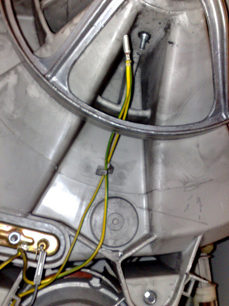The green and yellow earth wire connected to the metal casing inside an electric motor.
What are short circuits? A short circuit usually happens by mistake. An extra electrical pathway is made. The extra electrical pathway has very low resistance and so the current increases. This increased current can damage appliances and cause overheating. Overheating can lead to fires.
There are several safety devices which are used to stop the flow of current if a short circuit occurs.
Let's look at some of the safety devices which are commonly used.
Making your own fuse
This is a simple way to demonstrate how a fuse works. Learners will make a small fuse from steel wool. Make sure that you use a heat resistant tile or block under the fuse because it will become hot and burn up. An old ceramic tile or piece of wood would work best.
Fuses are a practical application of the heating effect of an electric current. If you have enough equipment you could allow small groups of learners to complete this activity. Otherwise, use it as a demonstration.
MATERIALS:
The light bulb is included to show that the current is flowing while the steel wool is in place but not flowing when the steel wool melts. The variable resistor is used to show that when the resistance is high, the current is low enough that the fuse warms up but doesn't melt. When the resistance is lowered, the current speeds up until it melts the steel wool.
If you are demonstrating and you want to make the activity more exciting then you can use a small ball of steel wool instead of a wire. This should make the steel wool spark and burn. This should be done behind a screen as the sparks could land on a learner.
If you do not have a variable resistor then leave it out of the circuit and rather explain the concept. An ammeter is also not crucial in doing this activity as the light bulb can be used to indicate whether there is current or not.
three 1,5 V cells (large voltage battery)
copper conducting wires with crocodile clips
steel wool
heat resistant mat or piece of wood
torch light bulb
variable resistor
ammeter
INSTRUCTIONS
Set up a circuit according to the following picture.
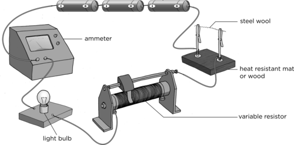
Twist a few strands of steel wool into a wire. This must not be very thick. Just a few strands will do.
Use the steel wool to complete the circuit.
Set the variable resistor to its highest resistance.
Close the switch. What do you observe?
The light bulb should glow and the steel wool should warm up but not melt.
Take note of the reading on the ammeter which measures the current in the circuit.
Open the switch.
Set the variable resistance to its lowest resistance.
Close the switch. What do you observe?
The steel wool melts/burns and breaks up and the light bulb stops glowing.
QUESTIONS:
Draw a circuit diagram for your circuit.
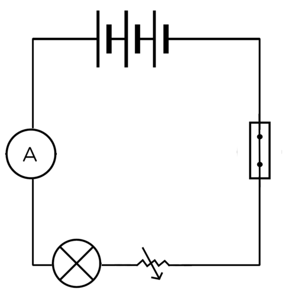
Why is the light bulb included in the circuit?
The light bulb is a good indicator of whether or not there is a current in the circuit. If the light bulb glows it means there is electric current. If the light does not glow it means that there is no current (or there is a very small current).
NOTE: Sometimes though there might still be a very small electric current, but it does not provide enough energy to cause the light bulb to glow. This is why the light bulb gives a good indication, but an ammeter will provide the most definitive indication of whether there is a current or not.
When you decreased the resistance, what happened to the current? In other words, what happened to the reading on the ammeter?
The current increases when the resistance decreased. The ammeter reading increases.
What do you think happens to the electric current when the steel wool has burnt? Explain your answer.
The current stops because the circuit has been broken. There is no longer a complete pathway for the electrons to move.
A fuse is a wire which will melt if the current travelling through becomes too large due to a fault, such as a short circuit or overload. When the fuse wire melts it breaks the circuit and current stops flowing. This disconnects the appliance to prevent any further damage.
Motor cars also have fuses. Can you see the fuse in this photo showing the battery in a motor car?
Fuses are stamped with the maximum current that they can handle. The photo is of a 5 ampere fuse. It will melt if a current of more than 5 amperes passes through it.
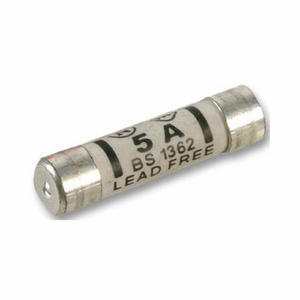A 5 ampere fuse.
Drawing circuit diagrams with fuses
INSTRUCTIONS:
Draw the following circuit diagrams to show various places to insert fuses in circuits.
A circuit diagram with two batteries and two light bulbs in series with each other. Insert a fuse into the circuit so that if the fuse breaks all the light bulbs will switch off.
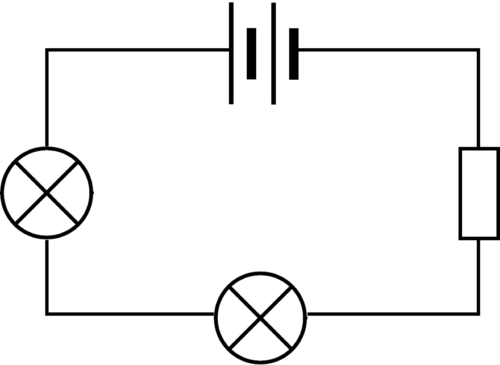
A circuit diagram with a cell and two light bulbs in parallel with each other. Insert a fuse into the circuit so that if the fuse breaks, only one of the light bulbs will switch off.
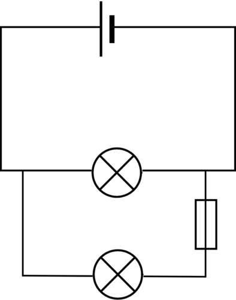
A circuit diagram with a cell and two light bulbs in parallel with each other. Insert a fuse into the circuit so that if the fuse breaks, both bulbs will switch off.
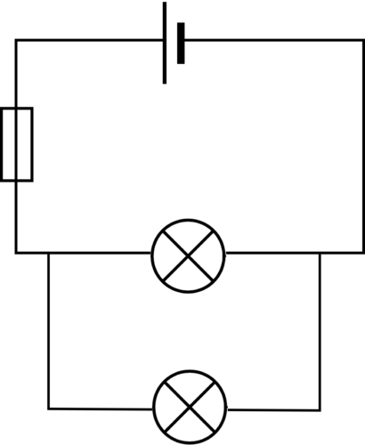
When a fuse melts, it has to be replaced each time. There are other devices which are now more commonly used in households rather than fuses, such as circuit breakers.
Circuit breakers are one of the most important safety devices in our homes today. Without circuit breakers, electricity in our houses and buildings could be dangerous due to the risk of fires and other safety hazards resulting from electrical wiring faults and equipment failures.
A circuit breaker is similar to a fuse except that it can be reset. Once a fuse has melted it is thrown away and a new fuse is put into the circuit. A circuit breaker acts in the same way that a switch would and breaks the circuit if the current surges. You may have seen these switches before on a circuit or distribution board in your home or school.
A good idea is to identify the circuit/distribution board in your school and take learners to see it so that they can see the switches.
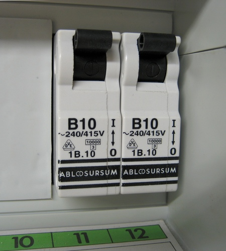An example of circuit breakers showing the switches.
Let's take a look at how a circuit breaker functions. Do you remember learning about electromagnets in Gr 8 when we looked at the effects of an electric current? An electromagnet is a type of magnet which forms due to an electric current around a bar. The strength of the magnet depends on the electric current. The more current, the stronger the magnet.
A basic circuit breaker consists of a switch connected to an electromagnet. Have a look at the following diagram.
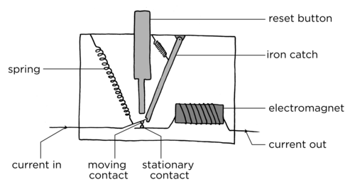
When the switch is on, the current flows through the device, from the left through the moving contact and across to the stationary contact. It then goes around the electromagnet and out the other side. The iron catch is holding the moving contact in place so that the circuit is complete. If the current passing through the circuit breaker increases, the electromagnet becomes stronger. If the current gets to unsafe levels, the electromagnet becomes strong enough to pull the iron catch lever. This releases the moving contact so that the circuit breaks and the electricity is shut off, as shown in the following diagram.
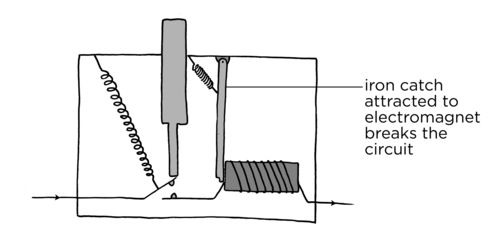
There is a reset button which can be pushed in order to push the contacts back together when the fault has been fixed and it is safe to reconnect the electricity.
Earth leakage
We have mentioned the dangers of electric charge in previous chapters. An electric charge will move from where there is a lot of potential energy to where this is less potential energy. Do you remember learning about lightning? The excess electrons from the clouds move to the ground and transfer a large amount of energy in the process.
The earth leakage circuit breaker is used in the electrical circuits of households and businesses. The circuit breakers for the different parts of the circuit are put into the electrical distribution board. The earth leakage circuit breaker is also on the distribution board.
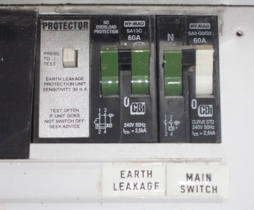An example of the earth leakage and main switch on a distribution board in a house.
The earth leakage circuit breaker is a safety device which can switch off the electricity supply to the house. The earth leakage is able to detect if any current is moving through the earth wire. If current is moving through the earth wire then there is a short circuit somewhere, for example as explained with the washing machine. The earth leakage circuit breaker then shuts down all the current as a safety measure.
Lightning is always a danger to an electric circuit. In areas where lightning strikes are common, a lightning spike is often used. This is a metal pole which is connected to the house with one end buried in the ground.
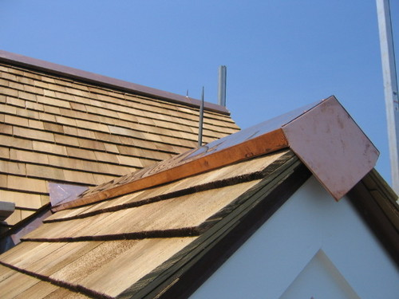A lightning rod on the roof of a house.
If lightning strikes the house then the surge in current will flow through the metal spike and go safely into the ground. This helps to prevent electric fires in households due to a lightning strike.
In the first section in this chapter, we learned about the three wires that are attached to most electrical appliances. Complete the following table to identify the colours of these three wires.
Wire
Colour
Neutral wire
Earth wire
Live wire
Wire
Colour
Neutral wire
Blue
Earth wire
Green-yellow striped
Live wire
Brown
The three wires are encased in a plastic insulation to form one cord which is attached to a plug. The plug is then inserted into the socket in a wall to connect the appliance to the mains electricity supply. Most electrical appliances that you buy will already have a plug attached but some older appliances might not. It is important to be able to rewire a standard plug. The photo shows a plug with the cable which was attached to it, but has been removed.
The three wires that form the cable leading to a plug.
Why are there three wires? For a complete circuit we have wires coming into the house and wires leaving the house. The wire which enters our homes is the live wire. The neutral wire leaves our homes and is earthed as it leaves the house. The earth wire has a very low resistance and is connected through the plug socket to the earth cable of the house. The earth cable leads into the ground. If an electrical appliance becomes charged due an electrical fault, it can discharge through earth wire and earth cable and into the ground. This prevents someone from getting an electric shock from a fault in an appliance.
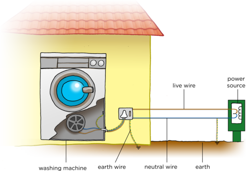Houses and other buildings are connected to the national grid by the live wire entering the house and the neutral wire leaving the house.
The neutral wire is earthed as it leaves the house, as shown in the diagram, to protect the national grid from lightning strikes. If lightning strikes the overhead cables or transmission lines, then the current flows into the ground rather than burning up the entire network.
The electrical plug has three metal pins. Each pin has a hole in it with a small metal screw. Loosening the screw opens the hole, tightening the screw closes the hole. Let's take a look inside a plug to see how to wire it.
A short video showing how to wire a 3-pin plugbit.ly/18JuoUj
Wiring a 3-pin plug
It is important that the learners get to practice this themselves. You do not need a 3-pin plug for each child. Divide the class into small groups and give each group one set of apparatus. Each learner in the group can then have a turn to wire the plug and then undo the plug for the next learner to have a turn.
Stress the importance of stripping the wires carefully. If the copper wires are cut or damaged then it can lead to an unsafe plug being used.
MATERIALS
piece of insulated electrical cord
wire strippers or craft knife
3-pin plug
small screwdriver
Have a look at the photo of a 3-pin plug.
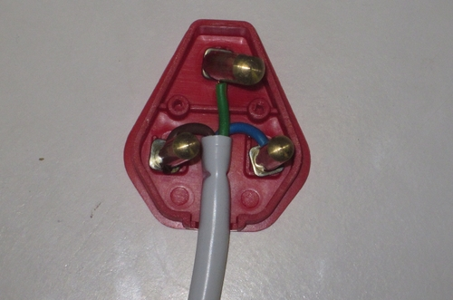A South African plug.
Which pin is the green-yellow cable connected to?
The green and yellow earth wire is always connected to the uppermost pin.
Which pin is the blue neutral wire attached to?
When viewed from the underneath of the plug, the blue neutral wire is always attached to the pin on the right.
Which pin is the brown live wire always attached to?
When viewed from the underneath of the plug, the brown live wire is always connected to the pin on the left.
We are now going to wire our own plugs.
INSTRUCTIONS
Cut about 2 cm of the white insulation off the electrical cord to expose the three wires within it. Do not slice directly into the wire as though you are cutting a loaf of bread. Move the blade carefully around the cord in a circle until you have cut through the insulation.
Once you have exposed the three different coloured wires, cut away about half a centimeter of insulation from each of these three smaller insulated wires to expose the copper wire inside.
Twist the copper wires gently with your fingers so that the strand is tight.
Open the plug cover.
Unscrew the little screws on the 3 metal pins.
Insert the copper wire into the metal pins. The green and yellow wire goes into the top pin (often labelled 'E' for earth, or with the symbol for earthing). The blue wire must go into the pin on the right when viewed from the bottom (often labelled 'N' for neutral). The brown wire must go into the pin on the left when viewed from the underneath of the plug (often labelled 'L' for live).
Tighten each of the little screws to trap the wires in place.
Replace the plug cover.
You have now correctly wired a 3-pin plug and attached it to the electrical cable.
When you wire a 3-pin plug of an actual appliance, what safety precautions do you think you need to follow? Discuss this with your partner or class and write down your answer here.
Learners must note that here in the activity they used plugs which are not connected to an electrical appliance. So, when using an actual electrical appliance, they must make sure that the appliance is not turned on or does not have any other connection. They must also work on a dry surface.
When viewed from the underneath with the pins facing towards you, the green and yellow earth wire is always connected to the uppermost pin, the blue neutral wire to the pin on the right and the brown live wire to the pin on the left.
Now that we know more about the safety practices in electrical wiring in buildings, let's practice by designing the wiring for a house.
Wiring a house
It is not necessary for the learners to build a model of this circuit. The learners need to plan how they can set up a circuit for the house which would allow each room to have a light which switches on and off without breaking the entire circuit. In other words, they will need to set up a parallel circuit with switches in each branch. The house should have a main switch capable of switching off all of the lights and a fuse, in case of overload.
INSTRUCTIONS:
You have made a doll's house for a neighbour's little girl. The doll's house has 2 bedrooms, a bathroom, a lounge and a kitchen. You want to make a simple electrical circuit for the doll's house.
Start off by drawing the floor plan of the house. Once you have this, draw in the wiring system to show how you would put a light bulb in every room. Each light must be able to switch on and off without affecting the other lights in the house. There must be a mains switch located in the kitchen and a fuse to prevent overload.
You should practice this on rough paper before drawing the final design in your workbook. Include the labels for each room.
Illegal connections
illegal
provision
An illegal electricity connection is made when a person attaches their home's electrical circuit to the national grid without a meter. This is done without the consent or knowledge of Eskom. Eskom cannot monitor the electricity consumption and so the electricity is being stolen as these consumers do not pay for the electricity.
Some people make money by supplying illegal connections and others have no legal way to access electricity and so they resort to illegal connections. Others have access to legal electricity, but prefer not to have to pay for it. Not only are these types of electrical connections illegal and considered energy theft, they are also very dangerous, as you will see in the next activity.
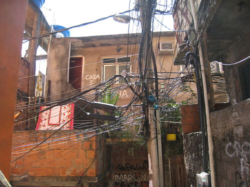Electricity theft is illegal and also very dangerous due to the insecure connections and fire risks.
There was much celebration in Doornbach, an informal settlement just outside of Cape Town, when the City switched on about 200 new electrical connections over the period of a few months in 2012. The illegal electricity connections had previously been the only supply of electricity to the area. Authorities often encounter fierce opposition when trying to cut down illegal electricity connections in informal settlements. But, the Doornbach residents immediately took it upon themselves to cut down the massive web of illegal wires in response to finally receiving formal, legal electricity provision.
Besides the mass of wires running through the informal settlement, many of the wires had been strung across Potsdam Road, the main road running through. This was very dangerous as the wires hung very low and would often catch on trucks passing through and snap. Fire threats and electrical shocks to passers-by and vehicles was also a safety concern. The use of legal electricity will also help to prevent shack fires as residents will rely less on candles and paraffin stoves.
A fifty-two-year-old Doornbach resident, celebrating the end of illegal connections in the settlement, said that she had lived there for 18 years and never received any municipal services from the City. The reason being that they had originally settled on privately owned land, which meant that the City could not, in terms of National legislation, install services on privately owned land. However, the City bought the land in May 2011, and Eskom could therefore begin the process of providing electricity to households in Doornbach. The fifty-two-year old was very excited about being able to use an electric iron and installing a refrigerator.
As a symbolic gesture, the residents took it upon themselves to remove the illegal wires. Many of the youth climbed up the dangerous makeshift poles in order to collect the wire which they would then sell to scrap yards. Not everyone was celebrating the switching on legal electricity connections in Doornbach. Many residents in neighbouring settlements, living in formal housing, were making money by selling and supplying electricity illegally to Doornbach. Street lighting has also been installed in Doornbach and it is hoped this will help to reduce the crime rate.
Lastly, the City of Cape Town extended their sincere thanks to the community of Doornbach, as without their support, involvement and cooperation, such a project would not have been possible.
QUESTIONS:
What is an informal settlement?
An informal settlement is a settlement that has not been planned by city planners. This means that there are no proper roads or housing developments. There are also no sanitary, water or electrical services in place before people settle on the land.
After reading this article, what do you think is the main reason that the people of Doornbach originally set up illegal connections?
The residents settled on privately owned land which did not have electrical connections on site.
Why is it dangerous for youths to climb the makeshift electricity poles?
The wires are not always insulated and touching live electrical wire can cause electrical shock.
What were some of the physical dangers of the illegal connections in Doornbach?
The illegal connections can electrocute passers-by, cause fires, and the wires hung very low over the main road which would then catch on trucks passing through.
Aside from the physical dangers associated with illegal electrical connections, why else are they illegal?
Eskom is not being paid for the electricity used by the residents. This means that they are losing money because they are indirectly providing the electricity.
Summary
Electricity can be dangerous and so we need safety devices such as fuses, circuit breakers and earth leakages to reduce risk.
A fuse is a safety device with a very low resistance wire, designed to melt if it experiences a large enough current. This breaks the circuit and protects the appliance, as well as preventing a possible fire hazard.
A circuit breaker is like a fuse, but acts as a switch which breaks the circuit in response to an electrical fault or overload. It can be reset.
Many electrical appliances with a metal casing have an earth wire attached to prevent electric shocks if there is a short circuit.
A three-pin plug has three wires: a brown live wire, a blue neutral wire and a green and yellow striped earth wire.
The earth wire has a very low resistance and is connected through the plug socket to the earth leakage system of the house, and into the ground.
A plug must be connected properly in order to make sure that it is safe to use.
Illegal electricity connections are both dangerous and illegal. It is a crime to steal electricity.
Concept map
Complete the concept map on the following page to summarize what you know about safety with electricity.
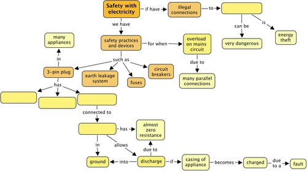
Teacher's version
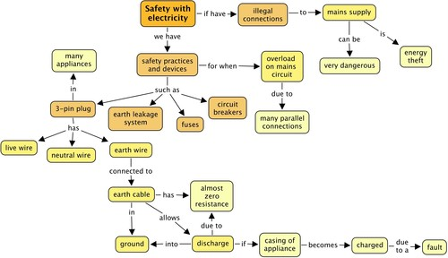
Revision questions
Explain how a fuse functions to protect an electric circuit. [4 marks]
A fuse is a low resistance wire which will melt if the current is too strong. The fuse melts and breaks the circuit. This stops the electric current and prevents fires or other safety hazards.
What would happen if you used a 3 A fuse in an electrical fan heater that needs a current of 8A to function? [1 mark]
The 3 A fuse would burn out and the fan would not work.
What type of fuse should you use in the 8 A fan heater? [1 mark]
The fuse should have a rating higher than 8 A so that it would only burn out if the current was bigger than 8 A.
Why are circuit breakers more convenient to use than fuses? [2 marks]
The circuit breaker can be reset but the fuse is destroyed and so needs to be replaced each time.
When a fuse "blows", why do you think it is important to fix the problem before replacing the fuse? [2 marks]
If the problem is not fixed then the current will still be too big and the new fuse will also "blow". The circuit might be dangerous to operate. You might risk an electric shock.
What is a short circuit? [3 marks]
A short circuit is an alternative pathway with an extremely low resistance. All of the current will move through the short circuit. Because of the low resistance the current increases and can cause an overload on the circuit.
Why is a short circuit dangerous? [2 marks]
The current is very strong in the short circuit and there is a danger of electrocution. If someone touches the short circuit or acts as the short circuit then they could get badly hurt or killed.
What is the colour of the live wire in an electrical cable? [1 mark]
Brown.
Write down one safety precaution that should be followed when wiring a 3-pin plug. [1 mark]
Make sure that the electrical supply is switched off.
Work on a dry surface.
What is the purpose of the green and yellow wire in an electrical cable? [2 marks]
The green and yellow wire is the earth wire. It ensures that any surge in current due to an electrical fault is safely grounded.
Draw an outline of a 3-pin plug and label where each wire is connected and what colour each wire is. [6 marks]
Learners must draw a basic outline of a plug with three circles. The top wire is the green-yellow striped earth wire. The blue neutral wire is always attached to the pin on the right when viewed from the bottom. The brown live wire is always connected to the pin on the left when viewed from the bottom.
Draw a circuit diagram for the following circuits:
A series circuit with 2 cells and three light bulbs. Insert a fuse that will break the circuit and all the bulbs won't work if there is a short circuit. [3 marks]
A circuit with a cell and two light bulbs in parallel with each other. Insert a fuse into the circuit so that if the fuse breaks, only one of the light bulbs will switch off. [3 marks]